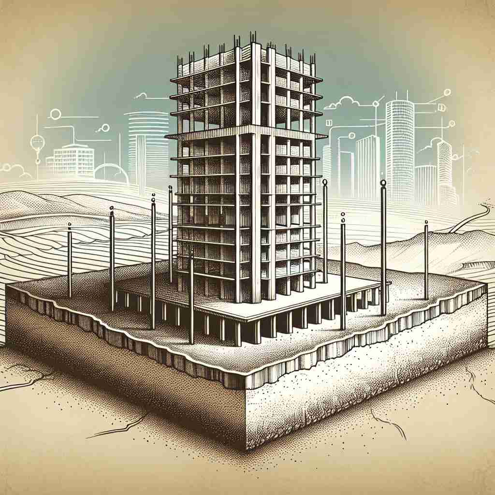

🗝️ n. the lowest part or bottom of something
🖼️ 在一个艺术博物馆中，游客们欣赏着一座雕塑。导游指着雕塑的底座解释道：'这就是雕塑的 base，是支撑整座雕塑的基础。'
🔍 想象一个物体的底部或基础。'base' 的核心含义就是"最低部分"或"基础"。无论是实物的底座，活动的大本营，还是抽象概念的基础，都源于这个核心含义。通过联想不同事物的"底部"或"基础"，你可以更容易理解和记忆 'base' 的多重含义。

💬 The base of the statue is beautifully carved.

💬 The squirrel is near the base of the tree while the hand paints it.

💬 The base of the windmill is very sturdy and supports the entire structure.

💬 The workers are preparing the building's base for construction.
🗝️ n. a main place from which an activity is controlled
🖼️ 在一个军事指挥中心内，指挥官正在地图前计划行动。他告诉团队成员：'我们将从这个 base 出发完成任务。'
💬 The company has its base in London.
❓ 比喻为活动的"底部"或支撑点
🗝️ n. the main ingredient or component of something
🖼️ 在一个繁忙的厨房里，厨师正在制作一碗意大利面。他说道：'今天这道菜的 base 是新鲜的番茄酱。'
💬 Tomato is used as a base for many sauces.
❓ 作为某物的"基础"或"底层"成分
🗝️ v. to use something as a foundation for development
🖼️ 在一个产品开发会议上，设计师提到：'我们将 base 这个新应用程序在现有的技术框架上。'
💬 He based his theory on recent scientific discoveries.
❓ 将某物作为"基础"来发展
🗝️ adj. morally low; without principles
🖼️ 在一场辩论赛中，演讲者指出了一些政客的 base 行为，批评他们缺乏道德原则。
💬 It was base of him to betray his friends.
❓ 比喻道德水平处于"最低点"
🗝️ n. any of the four bases in baseball
🖼️ 在一场激烈的棒球比赛中，选手迅速奔向下一个 base，全场观众热情地为他加油。
💬 The runner stole second base.
❓ 棒球场上的"基座"
🗝️ n. a number system's foundation value
🖼️ 在一间数学教室中，老师正在解释二进制系统。他说：'在二进制中， base 是 2，这是整个系统的基础。'
💬 The binary system uses base 2.
❓ 数学中的"基本"数值